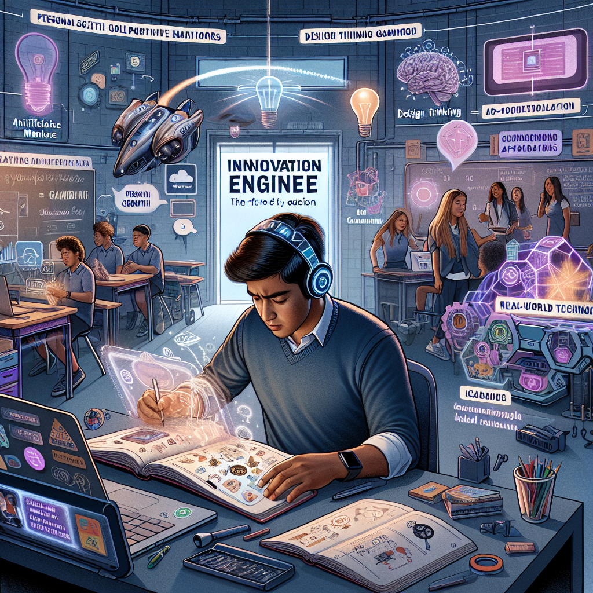

Discover bold, creative student-driven narratives for the future of higher education
SIGNALS
Indicators of emerging change, such as technologies, behaviors, or policies, that hint at potential futures.
TRENDS
Broader patterns or shifts over time that shape the trajectory of our educational landscape.
THEMES
Overarching ideas or concepts that tie together signals and trends, reflecting key values or goals.
This site showcases a collection of student-directed visions for the future of higher education in 2040. Using your responses to a series of thought-provoking questions, we’ve generated compelling storylines and imagery that illustrate potential pathways education might take in the decades to come.
Each story identifies key signals, trends, and themes that suggest how these imagined futures could become reality. Whether you’re exploring these futures for inspiration, curiosity, or insight, you’ll discover how today’s choices shape point towards the possibilities of tomorrow!
Kimberly's Storyboard Entry
In the idyllic space of Self-Discovery Sphere, the university of the future, Kimberly, a charismatic sophomore, steps into her Creativity Pod named ‘Cosmic Cadets’. This magnetic hub of like-minded astronomy enthusiasts uses high-tech tools like VR labs to simulate the universe's expansiveness and AI mentors programmed with the vast knowledge of astrophysics to guide their passion-driven projects on tracking celestial bodies. The beauty of this mode of learning was its unfettered freedom, with professors more as advisors initiating a shared process of exploration rather than a unilateral transfer of information.
In this utopia of learning, the university no longer anchors its measure of prowess on archaic tools such as grades or standardized tests. Instead, the system takes a paradigm shift to reference the Impact Dashboards on a social media platform, ‘OurSpace’. As Kimberly completes each project in her Creativity Pod, her Impact Dashboard gleams with badges she's earned for demonstrated resilience, effective collaboration and real-world impacts - from predicting meteor showers to improving EO Telescope lenses. This innovative approach fostered intrinsic motivation by focusing on personal growth and practical applications rather than abstract grading scales.
However, this passion-driven future education does invite critical considerations. Accessibility is pivotal; ensuring all students can access the state-of-the-art tools and technologies, so none misses out due to financial restraints. Ensuring inclusivity, so students of all backgrounds have their Creativity Pods to fit into without feeling alienated, is key. The biggest challenge, perhaps, would be to create an environment where individuals feel driven to learn and contribute without resorting to competition or self-promotion, as people often naturally veer towards these aspects. Despite these potential obstacles, the promise of a world idyllic with the joy of learning, the thrill of exploration and the kinship of collaboration makes Self-Discovery Sphere an educational revolution worth aspiring and striving for.
SIGNALS
1. Virtual Reality (VR) in Education: The use of VR in education has been increasingly adopted in recent years. Schools and universities have incorporated VR to create simulated environments for students to experience various scenarios or learn intricacies of subjects that are hard to grasp theoretically. For instance, medical students use VR to perform virtual surgeries, which offers a practical, risk-free learning experience. This aligns with the narrative where VR labs are used in the Creativity Pods to simulate the universe's expansiveness and study the celestial bodies.
2. Artificial Intelligence (AI) in Education: AI's role in education has been expanding, with AI tutors and mentors providing personalized learning experiences. For example, the Georgia Institute of Technology implemented an AI teaching assistant, 'Jill Watson', to address students' queries. Similarly, in the narrative, AI mentors with knowledge of astrophysics guide students in their passion-driven projects on astrophysics.
3. New forms of Student Evaluation: There is growing disapproval of the traditional grading system and more educational establishments are exploring alternatives. Badges and certifications conferred upon the completion of certain tasks is one such approach gaining popularity. The 'Impact Dashboards' and badges in the narrative resonate with this. Additionally, platforms like LinkedIn enable users to showcase their skills, experiences, and certifications, which echo the social media platform 'OurSpace' in the narrative where students display their achievements and impacts on real-world projects.
4. Ensuring Accessibility in Digital Education: Accessibility issues in digital education were thrown into sharp relief during the Covid-19 pandemic. Measures taken include providing devices, implementing modified teaching methods, launching programs to bridge the digital divide and significant discussion on policy level. This aligns with the narrative's anticipation of ensuring access to advanced tools and technologies for all students, irrespective of their financial abilities.
TRENDS
This narrative reflects a number of broader societal and educational shifts in the last five years that are likely to influence the scenario envisioned for 2040. These include a greater emphasis on individualized and student-centric learning, the increasing integration of technology (specifically AI and VR) in education, the de-emphasizing of traditional grading systems, and the growing importance of digital literacy and access to technology.
In recent years, there has been an increasing push for more personalized and student-centric learning. This is particularly reflected in the concept of ‘Creativity Pods’ and the individualized projects Kimberly undertakes. Such educational methods encourage passion-driven learning and exploration in various areas of interest.
The advent and advancement of artificial intelligence and virtual reality tools in education also show potential for a revolutionary change in teaching and learning practices. The inclusion of VR labs and AI mentors in the narrative demonstrates a movement toward high-tech, experiential learning environments.
There is also a burgeoning discontent with traditional grading systems, viewing them as inadequate measures of a student's abilities or potential. Instead, educators are leaning toward more holistic assessments that value resilience, collaboration, and real-world impacts, similar to the 'Impact Dashboards' mentioned in the narrative.
Lastly, the narrative hints at the increasing importance of digital literacy and access to technology. The inclusion of a social media platform in the education model suggests a shift towards digital, socially-connected learning environments. However, the narrative also underscores the challenges of such a system, particularly ensuring the universality of access - a concern that mirrors ongoing discussions around the issue of the ‘digital divide’ in our society.
THEMES
The envisioned 2040 education scenario in this narrative encompasses several overarching themes:
1. Passion-Driven Learning: The narrative emphasizes the individual's passion for learning as the driving force behind education. Education moves away from a traditional structural model where teachers transfer information to students. Instead, it becomes an exploration process, with mentors acting as guides. Students join Creativity Pods, spaces that fostered interest-based collaborative learning, thus igniting and nurturing their passion for certain subjects.
2. Innovative Assessment Techniques: The narrative presents a shift away from the conventional system of evaluation using grades or standardized tests. Instead, it introduces Impact Dashboards, where students earn badges for resilience, collaboration, and practical applications. This theme reflects a shift towards the assessment of real-world skills and impacts rather than abstract knowledge.
3. Inclusivity and Accessibility: The scenario discusses the importance of making the learning environment accessible and inclusive for all students. This requires the availability of state-of-the-art tools and technologies to all students, regardless of their financial means. It also encompasses the need for every student to find their place in this educational setting without feeling alienated.
4. Social Learning and Collaboration: The narrative underscores that the joy of learning comes from a shared process of exploration. This involves not only mutual support but also collaborative problem-solving, as illustrated when Kimberly and her peers work together on passion-driven projects.
5. The Challenge of Competition: Lastly, the narrative presents a concern that students may inherently veer towards competition and self-promotion in the absence of traditional assessment methods. This theme underscores the need for creating an environment that encourages learning and contribution without resorting to a competitive mindset.
Alex's Storyboard Entry

In the Passion-Driven Future University of 2040, students don't gather in ordinary classrooms but convene in "Innovation Engines," their version of the Creativity Pod. Let's follow Alex, an aspiring game developer interested in using gaming as a tool for improving mental health and cognitive skills. Alex collaborates with his like-minded peers in the "Mental Health Gaming Module" of the Innovation Engine, utilizing advanced tools like AI mentors for personalized advice, VR labs for virtual gaming simulations, and design thinking tools for tackling complex gaming problems.
The manner in which the educational progress is assessed in 2040 redefines traditional grading systems. Take Alex again. His progress is not evaluated using some arduous test or faceless numbers, but through a Personal Growth Journal. This approach allows for the recognition of each student’s learning journey, documenting key takeaways and their practical application in real-world scenarios. Alex's growth journal showcases his journey from the Idea-Merge Collaboration Hub, where he developed the concept, to his work with psychologists and programmers, shaping a multiplayer game that promotes cognitive skills.
The Passion-Driven Future education system has far-reaching impacts. Alex’s project, for instance, has a real-world impact, aiming to solve mental health issues, one game at a time. This education model also ignites interest in learning, as people are driven by their passions and interests. Students like Alex have gained recognition through 'OurSpace' dashboards, highlighting their contributions, not only to academic growth but societal development. However, implementing this model raises crucial concerns such as inclusivity of diverse passions, accessibility to advanced tools, ethical considerations, and scalability of such personalized education. These are the challenges which the Passion-Driven Future universities need to overcome before transforming education for the next generation of learners.
SIGNALS
1. The growth of Online Course Platforms: Platforms like Coursera, Udemy, and Khan Academy have revolutionized education in the past few years. These platforms allow students to follow their passions and interests, much like the narrative describes in Alex's case. They offer a wide range of courses, from game development to psychology, indicating that a more personalized, interest-based educational approach like the Future University of 2040 is already beginning to take shape.
2. Advancements in AI Technology: Increasingly, AI is being developed and used as a tool for educational mentoring. Platforms like CENTURY Tech utilize AI to create personalized learning experiences that adapt to individual students' learning patterns and knowledge gaps. AI tools also offer additional support outside the traditional classroom, resembling the AI mentors in the Innovation Engines mentioned in the narrative.
3. The Rise of VR in Education: The use of VR in education has become more prominent in recent years for designing immersive learning experiences. For example, companies like Labster are providing virtual lab experiences to students, similar to the VR labs for games development mentioned in the narrative.
4. Evolution of Assessment Systems: The traditional grading system has been receiving criticism because it confines student abilities to mere numbers. More recent alternatives like portfolio-based assessments and project-based evaluations resemble Alex's Personal Growth Journal. They consider the student's entire learning process, not just the final product, thus acknowledging individual learning journeys and real-world application skills. An example is the Mastery Transcript Consortium, which is pioneering a more holistic and individual-oriented high school transcript that moves beyond grades to document students' skills, interests, and genuine learning process.
TRENDS
Several ongoing trends from the last 5 years appear to influence the envisioned 2040 scenario. Firstly, there is a growing trend towards personalized learning, which is evident in the use of AI mentors for individualized advice. This reflects the broader shift in education towards catering to each student's specific learning needs and goals, differing from the one-size-fits-all traditional approach. Secondly, the advent of educational technology tools, such as VR labs for immersive learning experiences, mirrors the ongoing integration of advanced technology in contemporary teaching methods as part of the edtech movement.
Thirdly, the shift from traditional grading to growth journals depicts a general trend towards holistic education assessment that prioritizes learning process and personal growth over merely test scores. Also, the narrative suggests a move towards a more project-based learning approach where students apply their knowledge to practical and societal issues – a reflection of the current shift towards experiential learning where knowledge is not just learned but lived. These educational shifts are being driven largely by societal needs for more creativity, complex problem-solving skills, and social-emotional intelligence in the 21st-century workforce.
In terms of societal shifts, the narrative points to a society where mental health is given importance, and innovative methods, such as gaming, are embraced for improving cognitive skills and mental health. This mirrors ongoing dialogues around mental health destigmatization and the use of interactive methods in therapy. Finally, the mention of inclusivity, accessibility, ethics, and scalability echo broader societal dialogues on equity in education, thereby highlighting a societal expectation for future universities to address these issues.
THEMES
The narrative presents several overarching themes centered around the envisioned educational scenario in 2040. One such theme is the "Passion-Driven Learning," wherein education is personalized, and students pursue their unique interests, like Alex in gaming for mental health. This individualized learning methodology promotes creativity, innovation, and engagement in the learning process.
Another theme is the integration of "Advanced Technologies in Education" with students accessing AI mentors, VR labs, and design thinking tools in their learning journey. These hi-tech tools not only aid in understanding complex concepts more practically but also offer personalized mentorship, supporting the core idea of passion-driven learning.
The narrative also underscores "Redefining Educational Assessment" as a key theme. There's a move away from traditional grading systems towards more holistic assessment methods that capture the learner's journey and real-world application of knowledge, as showcased by Alex's Personal Growth Journal.
"Real-world Impact" is also presented as a key theme, where educational projects are designed to address real-world issues. Alex's game project, aimed at improving mental health, is a classic example. Furthermore, the narrative introduces the theme of "Societal Recognition of Learning," where learners' contributions are highlighted within society giving acknowledgment to academic growth as well as societal development.
Lastly, the narrative also brings out the theme of the "Challenges in Implementing the New Age Education Model," highlighting issues around inclusivity of diverse passions, accessibility to advanced tools, ethical considerations, and scalability of such personalized education. This draws attention to the infrastructural and systemic shifts needed to actualize the proposed education model for future learners.
Taylor's Storyboard Entry
In the imaginative world of the 2040 university education system, Taylor found a home within "Design Bloom", a Creativity Pod uniquely crafted for those who shared a passion for sustainable product design. Equipped with AI mentors, VR labs, and digital rendering tools, Design Bloom wasn't your traditional classroom; it felt more like a prodigious innovation lab where passion, not grades fueled learning. Every day, Taylor and her peers used these revolutionary tools to work on real-world projects that resonated with their interests, such as building and repairing everyday things in more sustainable ways.
Unlike the previous grading system, their progress wasn't measured by standardized tests but evaluated in a more holistic and meaningful way. After presenting their projects on the university's Collaboration Hub - "Common Ground", students received comprehensive feedback from their peers, local communities, and industry professionals. This feedback didn’t aim to point out failures, but it illuminated areas of improvement and celebrated their growth. Impact Dashboards on OurSpace became the vessels of triumph, showcasing digital portfolios filled with collaborative achievements, sustainable ideas brought to life, and the profound ways their work helped others. Education wasn’t one-dimensional anymore; it unfolded in numerous layers, each attached to its value and contribution to the world.
But creating this compelling world of learning, passion, and collaboration wasn't without its challenges. Critical questions emerged regarding inclusivity and accessibility, ensuring that every student, regardless of background or ability, had an equal opportunity to thrive. The scaling potential of this model needed scrutiny; to ensure it wasn't a privilege for a select few, but a norm available to every student in every part of the world. Despite these considerable concerns, the benefits of this new model were groundbreaking. It had the potential to solve global problems, foster collaboration, reignite students' passion for learning, and redefine the metrics of success. In fostering a culture of shared achievement, saved from the shadows of performance anxiety, this 2040 vision reimagined higher education as a nurturing ground where passion and purpose bloomed.
SIGNALS
1. The Rise of Artificial Intelligence in Education: A prominent signal that suggests movement toward this 2040 education scenario is the increasing integration of Artificial Intelligence (AI) into education. AI has been deployed in the form of chatbots, which serve as tutors or mentors, assist teachers with administrative tasks, and provide personalized learning experiences. For instance, in 2016, Georgia State University adopted an AI chatbot called "Pounce" that significantly improved summer course enrollment rates by answering prospective students' questions and reminding them to complete tasks.
2. The Advent of Virtual Reality (VR) Laboratories: VR technology has also gradually made its way into education. It allows students to immerse themselves in a comprehensive learning environment, fostering a better understanding of complex topics and encouraging experimental learning. In 2017, Google launched "Google Expeditions," a VR program for classrooms that enables teachers and students to take virtual trips. Similarly, Labster, a company providing virtual laboratory simulations for educators to empower the next generation of scientists, raised $21 million in series B funding in 2019.
3. Peer-review and Community Evaluation in MOOCs: The trending of Massive Open Online Courses (MOOCs) like Coursera, edX, etc., points toward this futuristic education model. Students undertake courses from across the globe, and an integral part of their grading system is peer-review, similar to the feedback system mentioned in the narrative. One example is the University of Michigan's successful implementation of a MOOC-based Master's Program in Applied Data Science, launched in 2019, which relies extensively on peer-review for evaluation.
4. Growth of Digital Portfolio Use: Over the years, digital portfolios have become increasingly popular in demonstrating a student's skills and growth. Tools like "Seesaw" or "Google Sites" have made it easier for learners to document their learning journey and showcase their accomplishments in creative ways beyond traditional grading. Portfolios have been in regular use in institutions like the University of Indianapolis since 2017, where students create and maintain a digital portfolio of their academic work and extracurricular activities, reflecting their growth over time.
These signals underline a shift towards innovative, inclusive, and meaningful learning methods that value creative thinking, collaboration, and real-world impact, much like in the envisioned 2040 education scenario.
TRENDS
One major shift reflecting this 2040 vision is the embrace of non-traditional education methods that have been growing in prominence over the past five years. With advancements in technology, education is shifting from a rigid formula towards more flexible and individual-centered learning experiences. This involves the use of artificial intelligence, virtual reality, and digital tools in creating interactive learning environments, replacing traditional lecture-based learning. This trend could be seen in the increasing adoption of educational technology in classrooms worldwide.
There has also been a growing dissatisfaction with standardized testing and a demand for more holistic educational outcomes. Schools are now seeking ways to meaningfully assess individual student growth and understanding instead of relying solely on tests. This shift is most evident in the rising popularity of project-based learning, which emphasizes hands-on, collaborative experiences over rote memorization.
Equally important is the emphasis on sustainability and real-world applicability in educational contexts over the past five years. As the impacts of climate change are felt worldwide, there is a mounting push for education to take more responsibility in addressing these issues. This is typically manifested in the integration of sustainability subjects and projects into curriculums.
Finally, social movements over the past five years have heightened attention to inclusivity and accessibility in all sectors, including education. There is an increasing demand for equitable access to educational resources and opportunities, reflecting growing awareness of systemic social inequalities. Overall, these trends hint at a future where education could be more personalized, practical, socially responsible, and accessible, reshaping our current understandings of what a productive learning environment looks like.
THEMES
The narrative presents multiple themes that embody the 2040 vision of the education sector. The first theme is 'Innovation and Technology', shown through the use of AI mentors, VR labs, and digital rendering tools in an unconventional learning environment, distancing from the traditional classroom setup. It emphasizes how technological advancements can facilitate interactive and in-depth learning experiences.
The second theme is 'Collaborative and Sustainable Learning'. The students work on real-world projects in teams, engendering collaboration and innovation while focusing on sustainability. This approach also ensures that learning centers around students’ passions and interests.
Thirdly, the theme of 'Holistic Evaluation' emerges with grading systems that are not based on standardized tests but on holistic reviews by peers, the local community, and industry professionals. Students' progress is measured, not through their failures but their growth, leading to a more positive learning environment.
The fourth theme is 'Global Accessibility and Inclusion,' wherein issues about equal opportunities in education, irrespective of students' socio-economic, racial, or cultural backgrounds, or their physical abilities, are raised. It emphasizes the need to safeguard equity and inclusivity in this evolved educational model.
Lastly, the 'Redefinition of Success' appears as a crucial theme where success metrics are reconfigured beyond grades to include impact on society, collaborative achievements, and students' personal growth. This encourages a purpose-driven, passion-based, and collaborative model of learning.
Kimberly's Storyboard Entry
It's the year 2040, and Kimberly joyfully strides into the bustling "Cosmos Creativity Pod," her specially assigned creativity group focused on space exploration and celestial phenomena. This future-model university centers around passion-oriented education, students breaking free from lecture halls and standardized tests to immerse themselves in real-world projects that fuel their curiosity and drive. Within the Cosmos Creativity Pod, interactive technologies, virtual reality labs, and AI-guided Raspberry Pis provide hands-on learning experiences, igniting Kimberly's intellectual appetite as she collaborates with peers, professors, and experts in devising a project on potential life-supporting planets.
Outside traditional classrooms, our future model of education revolutionizes assessment, liberating students from the pressures of grades. Kimberly's success is no longer defined by a GPA, but instead, by her resilience, collaborative spirit, and propensity for continual learning. Each project milestone achieved is recorded on her personalized Impact Dashboard over OurSpace, a platform celebrating collective achievements rather than individualistic accomplishments. Kimberly's dashboard not only exhibits her progress in the Cosmos Creativity Pod but also reflects her project's contribution towards societal progress and sustainable solutions.
The transformative effect of this Passion-Driven Future model cannot be overstated. It has rekindled a love for learning, drawn students closer together, and fostered innovative solutions to global problems through interdisciplinary collaboration. However, before widely implementing this model, critical questions around inclusivity, accessibility, and scalability must be addressed. How do we ensure the Creativity Pods cater to the diverse interests of all students? Will these advanced tools and technologies in the Collaboration Hubs be readily accessible to everyone? What are the ethical implications of measuring educational achievement through real-world impact? As we navigate these considerations, a Passion-Driven Future of Higher Education stands before us, promising an invigorating, collaborative, and purpose-driven learning experience for everyone.
SIGNALS
1. The increasing popularity and development of Virtual Reality (VR) and Artificial Intelligence (AI) Technologies: These technologies offer immersive, interactive learning experiences, mirroring the narrative's depiction of the Cosmos Creativity Pod. For instance, Google Expeditions VR app has been aiding students to immerse themselves in VR trips since 2015. Raspberry Pi, a commonly used AI tool for education, offers various projects that students can work on, mirroring the AI-guided Raspberry Pi mentioned in Kimberly's learning environment.
2. The growth of Online Learning Platforms: Platforms like Coursera, edX, and Khan Academy have risen in popularity over the years. In 2020, due to the pandemic, these platforms saw an enormous surge in users, indicating a shift from traditional lecture-based education to more flexible, interest-driven modes of learning. This trend mirrors the Passion-Driven Future model, particularly "OurSpace," the platform mentioned in the narrative that supports collaborative, project-based learning.
3. Rise in Alternative Assessment Models: Various educational institutions and learning platforms have begun prioritizing competency-based assessments over traditional grading systems in recent years. For instance, Western Governors University offers a competency-based curriculum where students advance not by accumulating credit hours but by demonstrating their skills and knowledge. This shift aligns with the narrative's assessment revolution where Kimberly's success is defined by her resilience and continual learning, recorded on her "Impact Dashboard."
4. Emphasis on Interdisciplinary Education: Universities like Stanford and MIT have developed and promoted interdisciplinary programs that emphasize collaboration and innovative solutions to comprehensive problems. This shift aligns with the interdisciplinary collaboration described in the narrative's Future-Driven Higher Education model.
5. The push for greater Diversity and Inclusion in Education: Movements like #StayInSTEM, which seeks to make science, technology, engineering, and math fields more inclusive, highlight the ongoing efforts towards ensuring accessibility and inclusivity in education, reflecting the narrative's critical questions around inclusivity in the Creativity Pods.
TRENDS
The narrative depicts a futuristic model of higher education that is reflective of a number of broader trends which have been developing over the past five years. One is the shift towards 'passion-based' learning, where students focus their energy and curiosity into real-world projects in areas that they are passionate about. This shift has been fueled by the criticisms of traditional education systems as archaic and inadequate in preparing students for the real world. The drive for revival in learning methods and the increasingly acknowledged value of STEM education has resulted in an increased integration of technology in the classrooms.
Technological advancement and equality in education are also themes reflected by the 2040 scenario. The use of Interactive technologies, AI, and virtual reality tools for creating hands-on learning environments indicates a foreseeable future where technology-driven learning takes the forefront. This trend is already becoming apparent with increasing use of online learning platforms, educational apps, and emerging technologies.
Additionally, the narrative emphasizes a transformation in educational assessment methods, focusing more on skills like resilience, collaboration, and continuous learning rather than grades. Adoption of inclusive and holistic measures of student success has been a growing trend in recent years, driven by a recognition that traditional grading systems don't always reflect a student's intelligence or potential. A focus on sustainability and societal contribution underscores the growing social awareness among youths, a trend that’s been increasing as a reaction to global environmental and societal challenges.
However, the narrative also flags issues such as accessibility, inclusivity and possible ethical implications, reflecting a growing examination of wide equity gaps in education and recognition of intersectionality, ensuring that education is diverse, inclusive and universally accessible. This trend has gained traction due to the social justice movements and increased scrutiny of systemic inequities in recent years. Therefore, the evolution of the 2040 educational environment will likely be shaped by these patterns in societal and educational developments.
THEMES
The envisioned 2040 education scenario presents several overarching themes. The first key theme is passion-oriented learning, which steers away from rigid, traditional learning methods and allows for education centered around students' interests and curiosities. Secondly, the narrative strongly suggests a theme of technology-integrated education, including the use of virtual reality labs and artificial intelligence to enhance the learning experience. This idea also alludes to interactive and practical learning, emphasizing experiential involvement over passive information absorption.
Collaboration is another essential theme in this future-model university, as it underscores the significance of working together with peers, professors, and external experts. This collective approach goes beyond the individualistic achievement model to promote a philosophy of collective accomplishment and societal contribution.
Furthermore, the narrative also engages with the theme of alternative assessment methods, where grading is replaced by innovative measures such as resilience, continual learning, and progressive milestoning. The introduction of platforms like the Impact Dashboard transforms the notion of success, emphasizing student's contributions toward societal progress instead of individualistic accomplishments.
Lastly, the scenario lays out the theme of education as a tool for problem-solving and innovation. It underscores the education system's potential to address global issues through inter-disciplinary collaboration. However, it also brings forth key considerations around inclusivity, accessibility, and ethical implications of such an education scenario.
Kimberly's Storyboard Entry
In the University of the Future, Kimberly enters her classroom, a vibrant co-creative environment filled with a medley of advanced technologies and comfortingly familiar elements. She navigates a syllabus of objectives rather than strict timelines, choosing her path of learning built on passion-driven projects. Today, she dives deep into an innovative light-up jump rope concept using Python to code and Raspberry Pi sensors. She gets her hands dirty, her mind engaged, and her spirit ignited. As she struggles to articulate her thoughts into words, she relies on a unique cognitive translator that instantly transforms her ideas into a coherent textual format. Kimberly's learning experience now surpasses traditional boundaries, allowing her to acquire real-life skills, from understanding taxes to fixing a flat tire.
Gone are the days of traditional education metrics; Kimberly's progress now rides on a gamified system. She accumulates points for every project completed, each concept mastered, every problem solved. Achieving her goals fills her with a sense of accomplishment - it's not about competing with her peers anymore; it's about her personal journey of learning. The pressure to conform to fixed timelines has dissipated. She still has her challenges with mental health, but without the constant anxiety to prove her worth through grades, she finds herself happier and more productive.
The ripple effects of this 2040 education model echo far beyond the walls of the University. Kimberly collaborates with a diverse set of peers from different departments for collective project work in non-competitive environments, fostering a stronger sense of community and shared learning. Equipped with skills in data analysis, communication, and ethical decision-making, she uses her knowledge to challenge societal issues, particularly the flaws within the healthcare system. The focus on mental wellbeing reduces performance anxiety, with participation options that cater to different comfort zones, promoting a healthier, more resilient student body. However, navigating the complexity of AI and ensuring data privacy are emerging challenges for this education model, making digital literacy and leadership skills paramount. Through it all, Kimberly savors the energy of what feels like a summer camp, a place for exploration and growth, free from performance stress.
SIGNALS
1. Introduction of the Python Coding and Raspberry Pi in Education: These tools have changed the landscape of education by providing practical means of learning coding languages in the last few years. For instance, Raspberry Pi Foundation’s Code Club and CoderDojo allows young people worldwide to learn coding, making it closer to the narrative that Kimberly learns through interactive project-based learning.
2. Rise of Gamification in Education: Over the past few years, there's been a rise in the use of gamification in education. Sites like Coursera and Duolingo use gamification to motivate users to complete courses or learn languages by earning badges or points, much like how Kimberly's progress is tracked and motivated by a points system.
3. Emergence of Collaborative Learning Platforms: Emergence of collaborative educational platforms like Google Classroom, Edmodo, and Microsoft Teams in the last few years has enabled better interaction between students from different departments or schools. This kind of technologically mediated collaboration, as mentioned in the narrative where Kimberly works in tandem with peers from different departments is already becoming prominent.
4. Focus on Emotional Wellbeing and Mental Health: Recent years have seen a sweeping recognition of the importance of student's mental health in education. Schools and universities are implementing policies and programs aimed at reducing stress and pressure in education, echoing the narrative where the students are free from performance stress. For example, initiatives like the "Jed Campus" program aimed at promoting mental health on campuses align with the vision painted in the narrative.
TRENDS
Over the past five years, numerous patterns have emerged that preview the envisioned 2040 educational scenario. There has been a significant drive towards personalization and flexibility in learning experiences. This shift is evident in the rise of competency-based learning models, where students advance at their own pace, mastering one skill before moving on to the next. This learner-centric approach is becoming increasingly popular.
The growth of educational technologies is another movement. Schools are integrating advanced tools like AI and interactive devices into their programming. These tools allow for a more dynamic, hands-on learning environment. Simultaneously, there’s an increasing focus on fostering "21-century skills," such as coding, data analysis, and ethical decision-making, necessary for navigating the evolving digital landscape.
There has also been a change in assessment methods. Gamified learning systems are on the rise, replacing traditional grading systems for more engaging student experiences. This shift also decreases performance anxiety, promoting a healthier mental environment for students. The narrative aligns with the increasing societal awareness about mental health and the need to build more supportive and inclusive educational environments.
Collaborative learning, another ongoing trend, aligns well with the 2040 vision where students from various departments work together on collective projects, fostering a stronger sense of community. This trend complements broader societal movements towards more cooperative and less competitive work and learning environments.
Finally, there’s an increasing recognition of education's role in addressing societal concerns. This can be seen in students applying their acquired skills to challenge societal issues, reflective of the broader trend towards socially responsive and ethical education.
THEMES
The envisioned 2040 education scenario presented in the narrative exhibits key themes such as personalized, passion-driven learning; mental health focus; real-life skill acquisition; collaborative and non-competitive learning environments; advanced technology integration; active societal contribution; and digital literacy and leadership.
In this future, learning becomes a deeply personal and passion-driven pursuit. While utilizing advanced technologies such as cognitive translators and Raspberry Pi sensors enables personalized and engaging learning experiences, the focus is shifted to practical, real-life skill acquisition. Learning spaces evolve to foster collaborative work and shared learning in non-competitive, vibrant, and co-creative environments. This change results in a stronger sense of community, empowering students to not just be passive recipients of knowledge but active contributors to societal solutions.
The use of a gamified system and removal of strict timelines alleviate the traditional pressures of academic stress, making way for a more mental health-conscious approach to education. There are participation options designed to cater to different comfort zones, promoting the development of a healthier, more resilient student body and reducing performance anxiety.
Advanced technology integration comes with its own set of challenges necessitating heightened digital literacy and leadership skills among students. Beyond just learning how to use technology, students are challenged to navigate the complexities of AI and data privacy, illustrating the growing necessity of digital citizenship. Amidst this, the main focus remains on the joy of exploration and growth, free from performance stress, giving education the exciting energy of a summer camp.
Kimberly's Storyboard Entry
In the year 2040, a typical day for a university student like Liam, consisted of attending virtual lecture in his purpose-designed 'meditipod', a personal sanctuary equipped with augmented reality instruments and a neuro-responsive interface that captured his thoughts, translating them into coherent digital text as he brainstormed project ideas for his self-directed course. Liam had clear objectives: to master Python programming, gain proficiency in utilizing Raspberry Pi sensors, and conceptualize a tech-solution for the healthcare crisis. He particularly found joy in developing a light-up jump rope that created images through persistence of vision. Simultaneously, students across campus were engrossed in similarly innovation-centric, passion-driven projects, unconstrained by rigid curriculum structures. They felt excited, liberated, and empowered.
The measurement of progress had fundamentally changed in this future university model. Traditional grading systems had been replaced by a gamified construct where students collected points based on proficiency gained, bounties of real-world problems solved, and innovation spurred. Escalation to advanced ‘levels’ or moving on to different ‘quests’ wasn’t a matter of time spent, but a reflection of consistent dedication, perseverance, creativity and collaboration. The elimination of pass/fail labels and rigid timelines molded an environment conducive to mental well-being, effectively mitigating performance anxieties. Participation became more diverse – vocal interactions, reflection posts, thought-articulations, all held equal value and recognition.
Tangible impacts of this future model were myriad. Students, equipped with essential life skills and experiencing a paradigm shift of learning, became proficient problem solvers and empathetic leaders. The collaboration between disciplines fostered unique perspectives, nurturing the creation of practical, innovative solutions for pressing societal challenges like privacy concerns in an AI-dominated era. Mental health flourished in an environment of reduced competition, and the emphasis on a knowledge economy over grades tangibly reduced stress levels. However, challenges still prevailed. Debates surrounding the authenticity of point-based progression, equitability in the availability of technology-infused learning environments, and retaining a baseline standard of education within self-directed learning raged on. Nevertheless, the overwhelming consensus was one of optimism, as this evolving model of education reflected a hope-filled promise of nurturing well-rounded, skilled individuals equipped to tackle the challenges of the future.
SIGNALS
1. Rise of EdTech and Remote Learning: The COVID-19 pandemic in 2020 ushered an exponential increase in remote learning due to school and university closures worldwide. Innovations included online lecture platforms like Zoom and education-based software such as Seesaw and Google Classroom, which facilitate virtual interaction and provide digital tools for presentations, discussions, and assignments. The success of these platforms indicates a potential transition towards more virtual, personalized learning as described in the 2040 scenario.
2. Gamification in Education: Companies like Microsoft (through Minecraft: Education Edition) and Classcraft have been integrating game elements into education to motivate learning and improve student engagement. This gamified approach to education correlates with the 2040 scenario whereby progress is measured by points accumulated through proficiency and solving real-world problems.
3. Emergence of Augmented Reality (AR) and Virtual Reality (VR): AR/VR technologies have seen rapid growth in the education sector, allowing students to learn through immersive, interactive experiences. For example, Google's "Expeditions" app lets students go on virtual field trips. Such technological advances usher in a future closer to the 2040 narrative with 'meditipods' equipped with augmented reality tools.
4. Focus on Mental Health in Education: Over the past five years, there has been increasing recognition of the need to address mental health in education environments. Universities are beginning to offer more resources and support services for students, emphasizing the importance of a balanced and nurturing learning environment. This focus aligns with the 2040 scenario of fostering an environment conducive to mental well-being.
TRENDS
Several trends over the past five years may have contributed to this vision of the future of education. The first is the increasing digitization of learning experiences and the shift towards remote, self-directed learning, accelerated by the necessity of distance education due to the COVID-19 pandemic. This includes the use of augmented reality and other immersive technologies to enhance instruction, as well as AI and machine learning tools to personalize education and produce digital translations of thoughts and ideas.
The second trend centers around a move away from rigid curriculums and traditional grading systems. This comes as a response to growing discourse regarding the stress and performance anxiety associated with competitive education models, and concerns about the inadequacy of such models in equipping students with necessary problem-solving and leadership skills. Broader movements towards a more holistic, proficiency-based education are evident, with focus also being diverted towards developing practical skills and creative, critical thinking capacities over rote memorization or generic academic abilities.
Lastly, the rise and spread of digital technologies are shaping teaching and learning practices, requiring an intense focus on digital literacy. However, it also raises issues of digital equity, as access to resources and technology-infused learning environments are unequally distributed. There's also an ethical component which questions the implications of using AI technologies in education, particularly regarding privacy issues in an AI-dominated era. These debates point out some challenges to be encountered as we navigate the direction of digital education.
THEMES
The overarching themes of the envisioned 2040 education scenario include Technological Integration and Immersion, Personalization and Self-Directed Learning, Holistic Evaluation of Progress, Interdisciplinary Collaboration, Focus on Life and Soft Skills, Mental Well-being, and the Challenges in Implementing a Futuristic Education Model.
Technological Integration and Immersion refers to the comprehensive incorporation of technology like augmented reality and neuro-responsive interfaces into the educational system. Personalization and Self-Directed Learning emphasizes the flexibility and autonomy given to students to tailor their educational experience based on their passions and interests, allowing complete divergence from rigid curriculum structures.
Holistic Evaluation of Progress denotes the transformation of traditional grading systems to a gamified construct, focusing not solely on academic proficiency but also considering factors like innovation, real-world problem-solving, dedication, and creativity.
Interdisciplinary Collaboration is a theme that points towards the breaking of academic silos and the collaborative interactions between different disciplines, fostering unique perspectives and creative solutions.
The Focus on Life and Soft Skills is represented in the development of students as proficient problem solvers and empathetic leaders. This theme underscores the necessity to equip students with crucial abilities beyond academic knowledge.
Mental Well-being materializes in the narrative by highlighting the importance of creating an environment conducive to students' cognitive health, fostering a more diverse range of participation and mitigating performance anxieties.
Lastly, the theme of Challenges in Implementing a Futuristic Education Model highlights the potential critiques and issues that could arise with this new paradigm, such as authenticity and equitability concerns and the need to maintain a baseline educational standard.
Kimberly's Storyboard Entry
In the year 2040, vibrant laughter echoes across the university level educational summer camp, a world buzzing with enthusiasm, exploration, and learning. There, amidst the energetic throng of students forging their personal paths to knowledge, is Kimberly, or Kim as everyone, students and robot mentors alike, affectionately call her. Kim's days are anything but mundane or monotonous, being an active participant in her learning journey, a journey largely guided by her passion and interests. She spends her mornings lost in the world of Python coding, her afternoons dedicated to understanding the intricate mechanisms of Raspberry Pi sensors, and her evenings engaged in her passion-driven project - a light-up jump rope based on the persistence of vision theory. Kimberly’s wrists band, a futuristic AI-assisted articulator, records her thoughts as she works, transforming her ideas into coherent notes and designs, all the while pinpointing areas she needs to strengthen and suggesting resources to help her improve.
Success in the university education system of 2040 has shed its archaic cloak of standardized tests and grades, embracing an innovative approach that looks at the enthusiasm, effort, and skill mastering, much to Kimberly’s delight. Her learning achievements are celebrated in an immersive, gamified system where she accumulates points, not by simply answering questions but by demonstrating her ability to solve problems, work in teams, communicate her ideas, and most importantly, apply her learning to real-world contexts. Ditching the constraining timelines, whenever Kimberly meets the competency level in her learning tasks, she advances to the next stage, irrespective of the semester or year. Progress is independent of the time on the calendar, but is instead associated with mastery and dedication.
Such an approach to higher education, while transformative for students like Kim, has substantial societal implications. It fuels an ecosystem of motivated, lifelong learners who are not just intent on making a living, but on making an impact. These empowered students set out to solve pressing global problems such as healthcare inequities, data privacy concerns, and other sociopolitical issues, wielding their education like a beacon in the complex labyrinth that is our world. Kimberly's wonderfully whimsical jump rope is not just a cool physical product but stands as a testament to her problem-solving abilities, creative thinking, and perseverance – skills that are as invaluable in the real world as they are within the confines of her summer camp educational utopia.
However, transitioning to such a radically unconventional education system is not without its share of challenges. Traditionally ingrained notions of success and intelligence need to be actively deconstructed to make space for a growth-based performance index. The fine line between collaboration and competition runs the risk of blurring in a points-based system. To avoid this, continuous efforts to foster supportive, empathetic relationships, just like Kimberly experienced in her social mixers, will be critical. The necessity of massive investment, both in terms of technology and human capital, is another potential hurdle in this daring leap forward. Yet, overcoming these challenges is the price we pay for an education system that truly prepares our students for both life and work, an education system where Kimberly and every student like her can thrive and grow.
SIGNALS
1. Rise of AI Enabled Learning: In recent years, artificial technologies, such as AI-assisted articulators, have been developed and integrated into educational settings. An example is the Google Classroom app which uses AI to help teachers track students’ progress and suggest personalized tasks. This aligns with the narrative's depiction of Kimberly's wrist band that records her thoughts and suggest ways she can improve.
2. Adoption of Gamification in Education: The use of gamification in education has significantly increased over the past five years. Tools like Classcraft are being used to make learning interactive, rewarding, and competency-based, just like the gamified system Kimberly is part of in the 2040 scenario. In this system, learners earn points not just for right answers but for demonstrating skills such as problem-solving and teamwork.
3. Introduction of Personalized Learning: Personalization in education is increasingly being adopted. Platforms like Coursera or Khan Academy allow students to learn at their own pace, focusing on personal interests and improving weak areas – relating directly to Kimberly's self-paced and interest-based learning.
4. Focus on Real Life Skills: New pedagogical approaches like Project-Based Learning (PBL) has gained popularity. Schools like High Tech High in San Diego, USA, focus entirely on PBL, where students tackle real-world problems, fostering critical thinking, problem-solving, and collaboration. This is directly aligned with the 2040 vision where Kimberly uses her skills to create a product demonstrating these competencies.
5. Prevalence of Digital Portfolios: There's a shift from standardized testing to showcasing skills through digital portfolios, such as Seesaw, where students reflect, share, and showcase their learning journey and achievements. This mirrors Kimberly's learning environments where success is not defined by grades but skills mastery, enthusiasm, and effort.
TRENDS
In the scenario outlined above, a trend that's prominent is an increasing shift towards personalized, passion-driven learning, emphasizing skill acquisition rather than traditional grading systems, reflecting a larger societal move towards valuing individual strengths and creativity. This trend can be traced back to the rise of the maker movement, project-based learning, and the use of technology in education over the past five years. This narrative also speaks to a more student-centered approach to learning where pupils drive their educational journeys. This mirrors a societal shift from standardized testing due to its perceived limitations and a broader movement towards individual pacing and mastery learning. The role of AI in education (assisting in recording and organizing thoughts, suggesting areas of improvement) aligns with the digital transformation that we have been observing in nearly all sectors in recent years. Moreover, the emphasis on an education that aims to solve real-world problems points towards a larger trend in education where experiential, problem-based learning is prioritized. Lastly, the increasing integration of technology in education, including gamification and interactive learning signifies a shift from traditional models of teaching, with more emphasis on engaging and retaining the interest of digitally-native students, likely to shape education by 2040.
THEMES
The envisioned 2040 education scenario revolves around key themes like personalized, passion-driven education, the integration of technology, and lifelong learning. Cutting-edge technology such as AI and innovations like gamified systems are foreseen as key components of this future learning environment, enabling students like Kim to learn at their own pace, driven by their interests and passion, rather than conventional, standardized curriculums. The shift from time-bound progression to a competency-based system emphasizes the importance of mastery and dedication over mere rote learning.
Another dominant theme is the cultivation of real-world skills and problem-solving abilities. Education in the future is seen not just as a means to a career, but as a tool for impacting society and addressing global challenges. Therefore, education would focus on the holistic development of students, instilling creativity, perseverance, and problem-solving capabilities which are skills valued both within and outside the educational field.
The scenario also recognizes the inherent challenges in transforming traditional education systems. These include redefining societal perceptions of success and intelligence, fostering a healthy balance between collaboration and competition, and making substantial investments in technology and human resources. Despite these hurdles, the ultimate vision is to create an inclusive and engaging learning space where every student can thrive, driving home the theme of equitable and transformative education in the future.